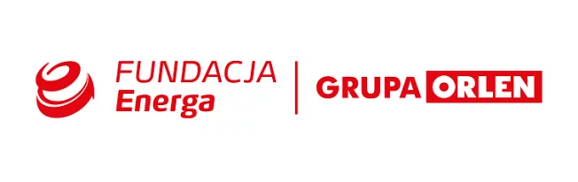

Od sierpnia do października nasze dwuosobowe patrole wolontariuszy jeździły do domów seniorów u kresu życia, wykluczonych komunikacyjnie – tam, gdzie bez samochodu po prostu nie da się dotrzeć. Wszystko w ramach projektu „Mobilna Warta – napędzamy wsparcie: opieka wytchnieniowa dla wykluczonych komunikacyjnie seniorów na terenie województwa pomorskiego”, który mogliśmy zrealizować dzięki darowiźnie Fundacji Energa w wysokości 30 000 zł.
Cała darowizna poszła na to, bez czego nasza praca nie istnieje: na dojazd. W Fundacji „Ostatnia Warta” dojazd nie jest kosztem administracyjnym – jest warunkiem obecności. Wolontariusz, który nie dojedzie, nie usiądzie przy łóżku, nie potrzyma za rękę i nie da wyczerpanej rodzinie kilku godzin wytchnienia.
Godziny, wyjazdy i kilometry podajemy po zamknięciu 28 z 30 dyżurów. U dwóch ostatnich podopiecznych nasze patrole są jeszcze obecne – pełne dane znajdą się w grudniowym rozliczeniu.
Na początku sierpnia spływały do nas kolejne zgłoszenia od rodzin, które czekały na pomoc, a my nie wiedzieliśmy jeszcze, co im odpowiedzieć. Napisaliśmy więc do Fundacji Energa z pytaniem o status umowy. W ciągu jednego dnia Zarząd Fundacji Energa – Pani Prezes Katarzyna Kardasz i Pani Wiceprezes Magdalena Marszałkowska – podpisał umowę, a Pani Michalina Walesiak dopilnowała, by tego samego dnia wyszedł przelew.
Dla nas nie była to formalność. To była odpowiedź, którą od razu mogliśmy przekazać czekającym rodzinom: jedziemy. Jeszcze w sierpniu nasze patrole były w drodze do pierwszych dziesięciu podopiecznych.
Liczby są jednak tylko ramą. Najlepiej podsumowała to jedna z naszych podopiecznych, która powiedziała do Prezesa Fundacji:
„Ma Pan te Panie w rękę na kolanach pocałować!”
Przekazujemy te słowa dalej – razem z naszym własnym, ogromnym dziękujemy.
Fundacja Energa przypomina, że dobra energia zawsze powraca. Tej jesieni widzieliśmy to na własne oczy: wróciła do 30 pomorskich domów – jako kilka godzin snu dla wyczerpanego opiekuna, jako spokojna rozmowa w trudny wieczór, jako ręka, którą ktoś trzyma do końca.
Dziękujemy Zarządowi Fundacji Energa i Pani Michalinie Walesiak za zaufanie, sprawczość i serce do sprawy. Dziękujemy też naszym 32 wolontariuszom, którzy przez trzy miesiące wsiadali do samochodów, by być tam, gdzie byli najbardziej potrzebni.
Ostatnie dyżury trwają jeszcze w listopadzie, a w grudniu przekażemy Fundacji Energa pełne rozliczenie darowizny. Opis projektu znajduje się na stałe w zakładce Projekty.
Informacja o finansowaniu: Projekt „Mobilna Warta – napędzamy wsparcie: opieka wytchnieniowa dla wykluczonych komunikacyjnie seniorów na terenie województwa pomorskiego” realizowany jest dzięki darowiźnie Fundacji Energa (Umowa darowizny nr 139/2026). Wartość darowizny: 30 000,00 zł. #FundacjaEnerga #DobraEnergia #MobilnaWarta #SittingService #wolontariat